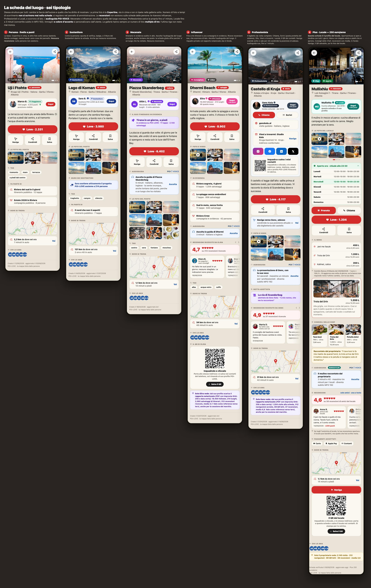
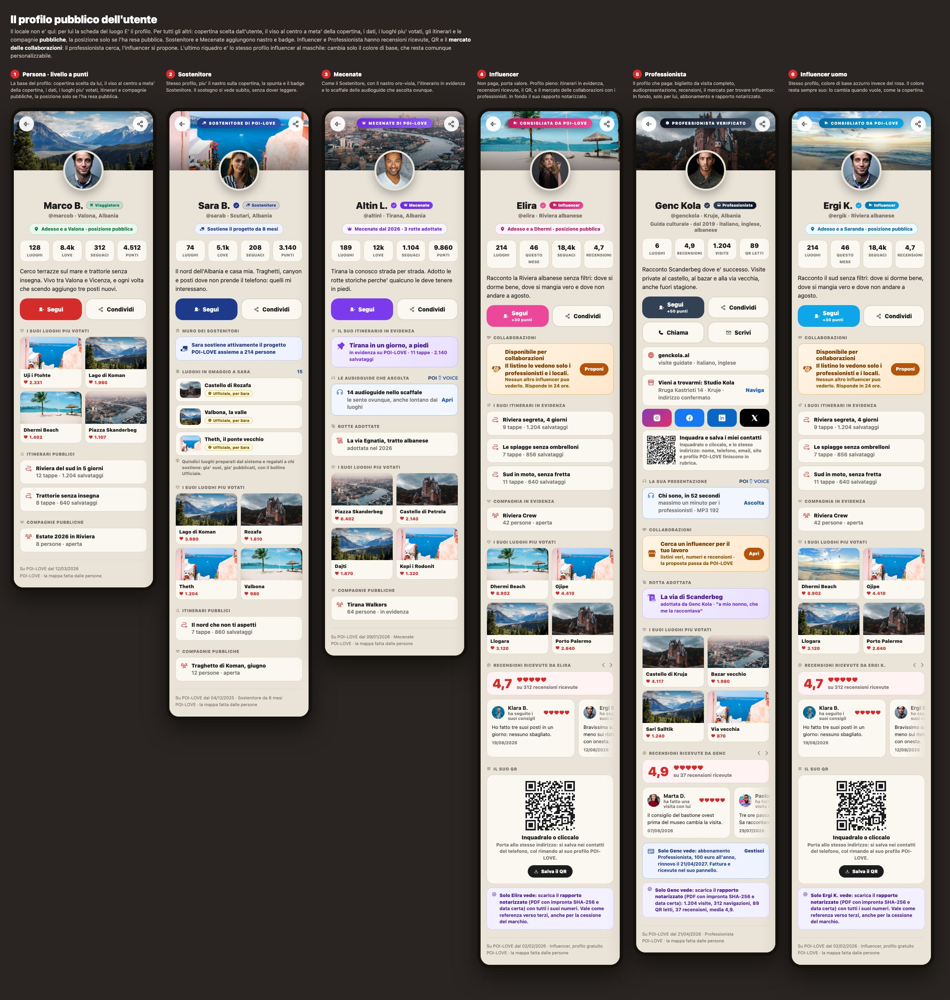

Dalla webapp di oggi al prodotto completo con app sugli store · versione del 20/08/2026
Questo documento tiene insieme tutto: cosa esiste, cosa manca, in che ordine si costruisce, quanto costa in giornate
e cosa serve da Alessandro. Comprende la trasformazione in app collegata alla parte browser, con
una sola sorgente di dati per tutte e due.
Fondamento verificato oggi sul sistema vero, non sulle carte. Database interrogato dal vivo,
codice letto riga per riga, siti chiamati, leggi controllate alla fonte. Quattro indagini indipendenti, ognuna con un
secondo controllore che l'ha contestata. Dove il controllo mi ha smentito, il documento riporta la smentita.
1Come è fatto il sistema
Il punto che regge tutto: browser e app non sono due prodotti. Sono due finestre sulla stessa
porta dei dati. Quello che si costruisce per il browser vale per l'app, e viceversa. È questo che rende possibile fare
l'app in trenta giornate invece che in cento.
2Cosa c'è già, verificato oggi
Pronto e in uso
Dove
Persone, punti, livelli, avatar, copertina
tabella profiles
Luoghi con foto, tag, categorie, love, bollini
tabella pois, 35 colonne
Chi segue chi, love, liste, itinerari, compagnie con messaggi vocali
7 tabelle
Rotte storiche e adozione, punteggi, badge, moderazione, segnalazioni
funzioni già scritte
Avvisi, email, consensi, pixel, pagine di comunicazione
zona media, attiva dall'11/07
Pagine pubbliche per i motori di ricerca
poi, trip, route, esplora, sitemap
Amministrazione a moduli
12 moduli
Tre lingue con tabella unica
915 voci, allineate
92 migrazioni applicate. La base c'è: non si riparte da zero.
3Cosa manca, e cosa il controllo ha smentito
Quattro cose che avevo scritto e che non stavano in piedi. Le riporto perché un piano che
nasconde i propri errori non serve a niente.
Avevo scritto
Come stanno le cose
Effetto
L'app si aggancia al nostro impianto cambiando solo l'indirizzo
Il protocollo è compatibile, ma l'app cerca colonne che non esistono più. Ed è ferma a una versione di novembre 2024, tre indietro
Da 2 a 5 giornate: è una riscrittura del livello dati
Rapporto notarizzato con data certa
In POI•LOVE non c'è nessuna marcatura. Il certificato scaricabile oggi da poilove.com dichiara un'impronta diversa da quella del PDF pubblicato
Va rigenerato o tolto. Vedi capitolo 6
Le foto le cerchiamo già con licenza utilizzabile
La ricerca su Wikimedia non filtra nessuna licenza, e nessuna riga di codice salva autore e licenza
Le foto esterne di oggi sono già fuori norma
Cinque giornate per 200 luoghi
Nel database ci sono 18 luoghi e zero Ufficiali. Ma per i 200 luoghi scelti bene la copertura fotografica misurata è 185 su 200, non il 32 per cento del campo lungo
La catena automatica regge. Restano circa 15 luoghi da fare a mano
Buchi trovati che nessuno aveva nominato
La tabella dei luoghi non ha campi lingua. Le tre lingue non hanno dove atterrare: prima di generare
qualsiasi contenuto serve la migrazione (titolo e descrizione per lingua).
La porta dei dati risponde anche senza chiave ed espone chi è amministratore e le note di moderazione.
Scrivere è bloccato, i luoghi privati non escono, ma quelle colonne vanno chiuse. In attesa del sì.
La regola sui volti è già scritta nelle condizioni e nell'informativa, ma nessuna riga di codice la fa rispettare.
Le immagini generate dall'AI per illustrare luoghi veri sono contemporaneamente contro la regola interna
del progetto e contro le regole degli store.
La caduta di lingua è sull'albanese: un tedesco che arriva oggi legge albanese. Deve cadere sull'inglese.
Undici punti del codice chiamano il geocodificatore pubblico in modo che viola le sue regole d'uso.
Aprendo altre città il blocco arriva.
4I cantieri
#
Cantiere
Cosa comprende
Giornate
A
Web, il prodotto completo
schede dei luoghi nelle sei tipologie, profili nelle cinque, livelli veri, recensioni con moderazione AI,
locale Plus con menu e orari, audio della persona, audioguide ufficiali, QR, abbonamenti
40
B
Amministrazione al massimo
persone, luoghi, moderazione, menu, abbonamenti, media con licenze, livelli, statistiche, ruoli,
direttive della moderazione AI
7
C
Contenuti: 15 viaggi, 210 luoghi Ufficiali
catena automatica: dati aperti, foto con licenza e autore, volti sfocati, descrizioni nelle tre lingue,
controllo, bollino Ufficiale
9
D
App iPhone e Android
riscrittura del livello dati, versione attuale, mappa, luoghi, profili, notifiche vere,
avviso quando arrivi vicino, invio agli store
30
E
Fase due del web
mercato professionisti e influencer, rapporto con marcatura vera, promemoria di scadenza
6
F
Uscita dai confini
caduta su inglese, impianto lingue parametrico, categorie per lingua, geocodificatore nostro,
formati locali
5
Totale
97
Novantasette giornate non vuol dire novantasette giorni di calendario. Molte cose si
sovrappongono: mentre una banca risponde o uno store revisiona, si lavora ad altro. Il calendario del capitolo 8
è costruito su questo.
5La catena dei contenuti, passo per passo
6La prova di data: come stanno le cose davvero
Alessandro chiede: Themeli la marcatura la fa già in blockchain sul filone bitcoin, qual è la verità?
La verità, verificata riproducendo la prova dal vivo:
Livello
Cosa prova
Valore davanti a terzi
Impronta SHA-256 scritta da noi è quello che POI•LOVE ha oggi
Solo che il file non è cambiato. La data la scriviamo noi e possiamo riscriverla
Dichiarazione di parte. Non si può chiamare data certa
Ancoraggio su Bitcoin Themeli ce l'ha davvero e funziona
Che il documento esisteva prima di quel blocco e non è cambiato. Lo verifica chiunque senza fidarsi di noi
Prova solida di anteriorità, precisione di circa dieci minuti
Marca temporale qualificata non ce l'abbiamo
Lo stesso, ma con un ente riconosciuto che ci mette la firma
È l'unica con presunzione legale in Europa
Il motore esiste già dentro casa. È scritto in PHP nella piattaforma Top Market, usa i calendari
pubblici di OpenTimestamps e ancora davvero su Bitcoin: la prova di luglio è stata riaperta e confermata al blocco
961131 del 5 agosto. Per POI•LOVE non si inventa niente: si riusa quel motore.
Due correzioni da fare subito, e non sono di POI•LOVE soltanto.
Il certificato che oggi si scarica da poilove.com dichiara un'impronta e un peso che non corrispondono al
PDF pubblicato: chi verifica trova un risultato che non torna. Va rigenerato o tolto il pulsante.
Nell'archivio di Themeli la data scritta nel foglio di accompagnamento è l'ora del nostro sistema, non l'ora del
blocco. Su un documento consegnato a terzi va scritta l'ora del blocco.
La parola giusta per il documento che influencer e professionisti scaricheranno:
rapporto con marcatura temporale su blockchain Bitcoin. Non "notarizzato", che evoca il notaio e non è vero.
7Foto, volti e persone finte: cosa dice la legge
I volti nelle foto
Licenza libera e diritto della persona sono due cose diverse: una foto può essere liberamente riusabile e
contenere lo stesso il volto di qualcuno che non ha mai acconsentito a finire dentro POI•LOVE.
Dove
Regola
Europa e Albania
Il volto riconoscibile è un dato personale: serve una base giuridica per pubblicarlo
Italia
Scattare in strada è lecito, pubblicare per uso promozionale senza consenso no
Albania, il nostro mercato di lancio
La legge 124/2024 è la più severa sui minori. Soglia a 16 anni, più alta di quella italiana
Wikimedia Commons
Per luoghi privati serve il consenso della persona ritratta: meglio esterni, insegne, piatti, panorami
Apple e Google
Serve un pulsante "questa foto mi ritrae, rimuovila" con presa in carico tracciata. E l'AI non deve generare volti realistici né bambini
Regola unica, semplice da far rispettare: volto riconoscibile senza consenso, si sfoca. Il volto
di un minore si sfoca sempre. Lo strumento consigliato è deface, licenza libera, gira sulla nostra macchina.
Lavora in memoria e non conserva né volti né misure.
Le persone finte
Profili e recensioni falsi sono vietati per legge, non solo dalle regole degli store: in Italia dal codice del consumo
e dalla legge sulle recensioni in vigore dal 7 aprile 2026, in Albania dalla legge sulla tutela del consumatore.
La regola decisa da Alessandro chiude il problema. Le persone dimostrative portano una
scritta visibile dovunque compaiano e un segno nel database. Nessuna recensione finta su un locale vero:
lì scrive lui, e sono vere. I locali dimostrativi sono inventati.
Tre cose da rispettare perché la regola tenga davvero: i profili con la scritta non entrano nelle classifiche,
nei conteggi pubblici e nelle pagine per i motori; ILLI non li propone come consigli veri; prima di aprire una città
nuova si elenca tutto quello che ha il segno e si decide cosa resta.
8Da Tirana al mondo
POI•LOVE nasce a Tirana per ragioni personali del fondatore, ma il prodotto è pensato per uscire dai confini.
Cosa serve davvero, misurato sul codice di oggi:
Cosa
Come sta
Da fare
Tabella delle tre lingue
Sana, 915 voci allineate
Aggiungere una lingua è riempire un blocco
Caduta di lingua
Chi non è riconosciuto legge albanese
Cadere su inglese. Una riga, sblocca il mondo
Testi fuori dalla tabella
Oltre 250 punti scritti a mano in italiano
Portarli dentro la tabella prima di aggiungere lingue
Categorie
Una colonna per lingua
Tabella figlia: con dieci lingue l'attuale non regge
Geocodificatore
Undici punti violano le regole d'uso del servizio pubblico
Un solo punto di accesso, nostro
Traduzione automatica
Costo irrilevante: meno di un dollaro per lingua intera
Salvarla a fianco dell'originale, con l'etichetta "tradotto a macchina"
Informativa e Condizioni
Solo in italiano e dichiarate bozze
Chiuderle con un legale prima di aprire fuori dall'Albania
Formati locali
Numeri, date e valute non seguono la lingua
Da sistemare con l'apertura
La strada in tre passi. Prima l'Albania, fatta bene, con i quindici viaggi e i duecento luoghi.
Poi l'Italia, perché il fondatore è lì e la lingua c'è già. Poi l'inglese come lingua del mondo, aprendo città
una alla volta e solo quando c'è qualcuno che le cura. Il criterio per aprire una città non è la traduzione:
è avere contenuti veri e una persona che risponde.
9Calendario
ago
set 1
set 2
set 3
set 4
ott 1
ott 2
ott 3
ott 4
nov 1
nov 2
nov 3
A · Schede e profili
A · Livelli, recensioni, moderazione
A · Locale Plus, audio, QR
B · Amministrazione
C · Viaggi e 210 luoghi
E · Mercato e rapporto
F · Uscita dai confini
D · App iPhone e Android
D · Revisione degli store
Traguardo
Quando
Schede dei luoghi e profili, veri e in linea
10/09/2026
Livelli, recensioni con moderazione AI, amicizie
22/09/2026
Locale Plus completo, audio, QR
02/10/2026
Amministrazione al massimo
09/10/2026
Quindici viaggi e 210 luoghi Ufficiali in linea
18/10/2026
Mercato, rapporto con marcatura, uscita dai confini
28/10/2026
App inviata agli store
23/11/2026
App pubblicata
fine novembre, inizio dicembre
10Le cose da fare, in ordine
Subito, prima di qualunque altra cosa
Chiudere al pubblico la lettura di chi è amministratore e delle note di moderazione (in attesa del sì di Alessandro)
Rigenerare o togliere il certificato scaricabile da poilove.com, che oggi non torna
Aggiungere alla tabella dei luoghi i campi per le tre lingue
Aggiungere alle foto le colonne di licenza, autore e fonte
Far cadere la lingua sconosciuta sull'inglese
Cantiere A · il prodotto sul web
Scheda del luogo: copertina separata, galleria a multipli di tre, video compresso, sezioni per livello
Profilo pubblico nelle cinque tipologie, più la pagina per i motori
Amicizia come doppio seguito, elenco dei bloccati, invito a ricambiare con testo modificabile
Recensioni: sui luoghi e ricevute da influencer e professionisti, con la regola asimmetrica
Moderazione AI su direttive scritte, con la coda e il motivo
Livelli veri: limiti di foto, badge, muro dei sostenitori, quindici luoghi in omaggio, evidenze
Controllo automatico delle condizioni, ogni notte
Locale Plus: orari a tendina, menu con caricamento da file, doppia valuta, consigli dello chef, statistiche
Cambio della Banca d'Albania, una volta al giorno, con ricaduta sull'ultimo noto
Audio della persona: un minuto ai professionisti, tre ai locali, in MP3 192
Audioguide ufficiali POI•VOICE: durata libera, tre lingue, gestite dall'amministrazione
QR veri per locale, professionista e influencer
Abbonamenti: registrazione dentro, pagamento fuori
Cantiere B · amministrazione
Direttive della moderazione AI, modificabili senza toccare il codice
Coda delle segnalazioni con intervento entro 24 ore, come pretende Apple
Menu dei locali: compilazione a mano e caricamento da file
Media con licenza, autore e attribuzione visibile
Abbonamenti, livelli, ruoli, statistiche
Cantiere C · contenuti
Disegnare i quindici viaggi, tutte e dodici le prefetture
Costruire la catena automatica e farla girare
Sfocatura dei volti sulla macchina, prima della pubblicazione
Controllo e bollino Ufficiale
Portare gli script di misura dentro il repository, non nella cartella temporanea
Cantiere D · app
Riscrivere il livello dati sullo schema vero e portare l'impianto alla versione attuale
Accesso, mappa, luoghi, creazione con posizione e foto, profili
Notifiche vere e avviso quando arrivi vicino a un luogo, anche con l'app chiusa
Cancellazione dell'account dentro l'app, segnalazione e blocco utenti
Abbonamenti con il sistema di Apple e di Google
Immagini per gli store, tre lingue, invio e correzioni
11Cosa serve da Alessandro
Cosa
Quando
Stato
Sì alla chiusura delle colonne di amministrazione sulla porta dei dati
oggi
in attesa
Come si consegnano i quindici luoghi in omaggio: raccolta a suo nome o luoghi intestati
prima del cantiere A
in attesa
Pulizia dei 18 luoghi di prova oggi nel database
quando vuole
lo fa lui
Cosa vuol dire amico
fatto
doppio seguito
Foto del locale
fatto
copertina più 21 e un video
Abbonamenti venduti dal sito
fatto
no, per ora
Account Apple Developer e Google Play
entro fine ottobre
li apre lui
Chiave per le notifiche dal suo account Apple
a novembre
serve il suo account
Legale per informativa e condizioni, prima di uscire dall'Albania
prima del cantiere F
non lo posso fare io
12I rischi veri
Gli store. L'app ha tre punti delicati insieme: contenuti scritti dagli utenti, posizione in sottofondo e
abbonamenti. Un giro di rifiuto è lo scenario normale, non quello sfortunato.
Le foto dei luoghi minori. Sui duecento scelti bene la copertura è alta, ma se si scende nei villaggi
crolla. Meglio un luogo senza foto che una foto sbagliata.
La lingua albanese controllata dall'AI. È la scelta del fondatore ed è praticabile, ma su duecento schede
pubbliche un errore di lingua si vede. Conviene almeno una lettura umana a campione.
Il collaudo del fondatore è l'unico punto stretto del calendario: se salta un blocco, slitta tutto quello dopo.
Le dipendenze esterne (mappe, geocodifica, calendari della marcatura) hanno quote e regole d'uso.
Aprendo altre città vanno gestite prima, non quando arriva il blocco.
13I disegni approvati
Non sono illustrazioni: sono la specifica visiva di quello che va costruito. Ogni riquadro corrisponde a una
tipologia di scheda o di profilo, con le regole gia' decise (copertina separata, gallerie a multipli di tre,
recensioni solo dove servono, audioguide, QR, mercato delle collaborazioni).
La scheda pubblica del luogo, sei tipologie

Persona, Sostenitore, Mecenate, Influencer, Professionista, Plus locale. Per il locale questa scheda
e' il suo profilo; per tutti gli altri il profilo resta quello tradizionale e queste sono le schede dei loro luoghi.
Il profilo pubblico dell'utente, cinque tipologie

Copertina scelta dall'utente, il viso al centro a meta' della copertina, i dati, i luoghi piu' votati,
itinerari e compagnie pubbliche, la posizione solo se resa pubblica. L'ultimo riquadro e' lo stesso profilo influencer
al maschile: cambia solo il colore di base, che resta personalizzabile.
POI•LOVE è un prodotto 321, ingegnerizzato da Alessandro Castagna.
NIPT M52411017N · Tiranë · documento interno di lavoro, aggiornato al 20/08/2026